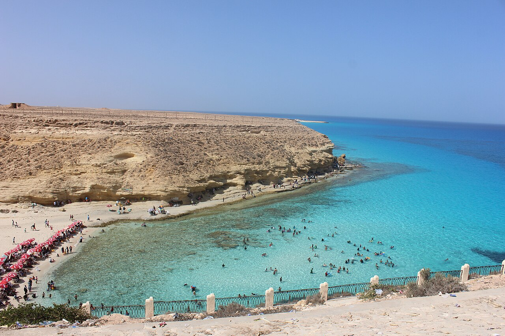
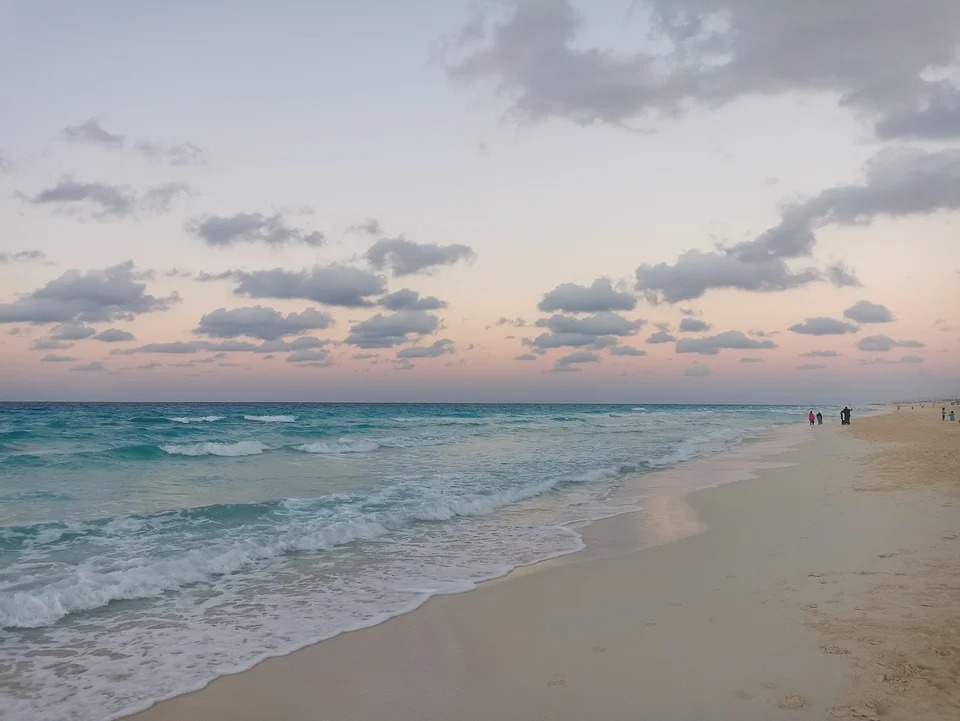
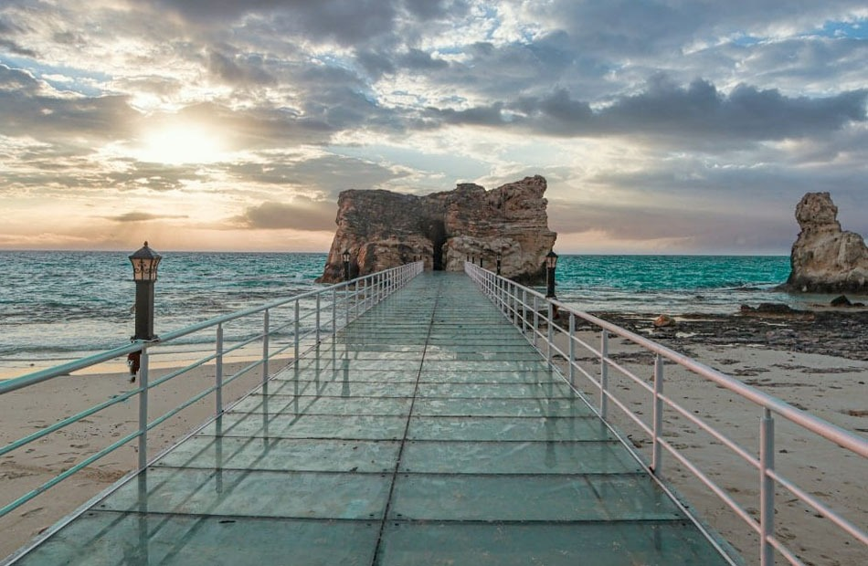
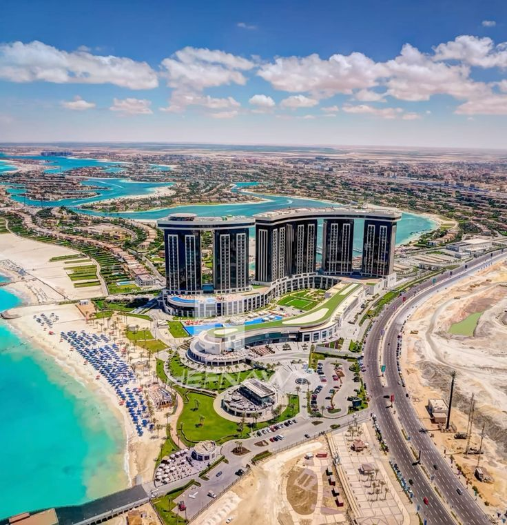
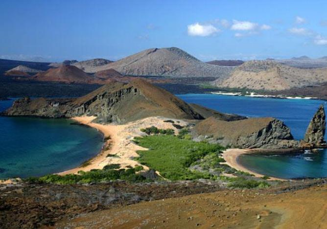

Matrouh Governorate is one of Egypt's border governorates, located in the northwestern corner, and its capital is the city of Marsa Matrouh. It is famous for its charming beaches with white sand and turquoise waters (such as Agiba and White), and it is considered one of the most beautiful tourist destinations in Egypt, as it combines the picturesque coastline with historical depth. It extends from kilometer 61 west of Alexandria to the Libyan border

Agiba Beach is one of the most famous and beautiful beaches in Marsa Matrouh, Egypt, located about 25 km west of the city. It is known as the "Pearl of the Sea" thanks to its clear turquoise waters, soft white sand, and unique natural rock formations at the foot of a high plateau, making it an ideal destination for nature lovers, photographers, and swimmers.

Al-Abyad Beach in Marsa Matrouh is one of the city's most beautiful beaches, distinguished by its clear turquoise waters and soft white sand, giving it a resemblance to the "Maldives of Egypt." It is located west of the city,It was named so because of the whiteness of its sands, the purity of the sand found there, and its color being close to white.

Cleopatra's Bath in Marsa Matrouh is a stunning natural rock formation extending into the sea, linked to the legend of Queen Cleopatra VII and the Roman general Mark Antony. It is said that the queen bathed in this warm rock pool to preserve her beauty, with water entering through natural tunnels, making it a popular tourist and historical attraction that blends the allure of nature with ancient love stories.

New Alamein City is a new city that has established itself on the Egyptian real estate map with its beauty and sophisticated designs, positioning itself as one of the newest and most beautiful fourth-generation cities. Designed according to the latest international standards, it is located on the North Coast, spanning 48,000 acres, and aims to house two million people. It features high-rise residential towers, a tourist area, universities, shopping centers, and boasts a 14-kilometer-long tourist promenade. The city aims to be a sustainable, year-round destination.

El Omeid Nature Reserve is a protected area located in the Matrouh Governorate. Established in 1986, it covers an area of 700 km² and is a unique example of coastal and desert biodiversity on the Mediterranean Sea. It is home to more than 170 rare plant and animal species and stretches along the coastal highway. El Omeid Nature Reserve is a popular destination for visitors seeking to explore Egyptian nature in a tranquil and protected environment.